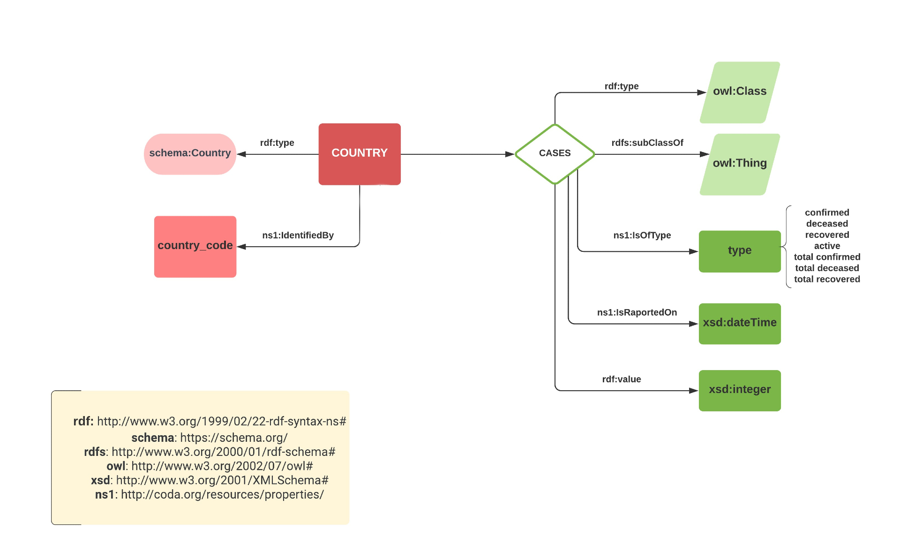
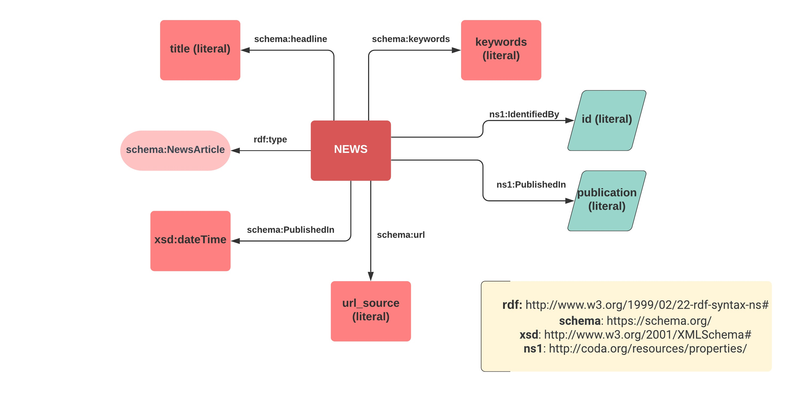
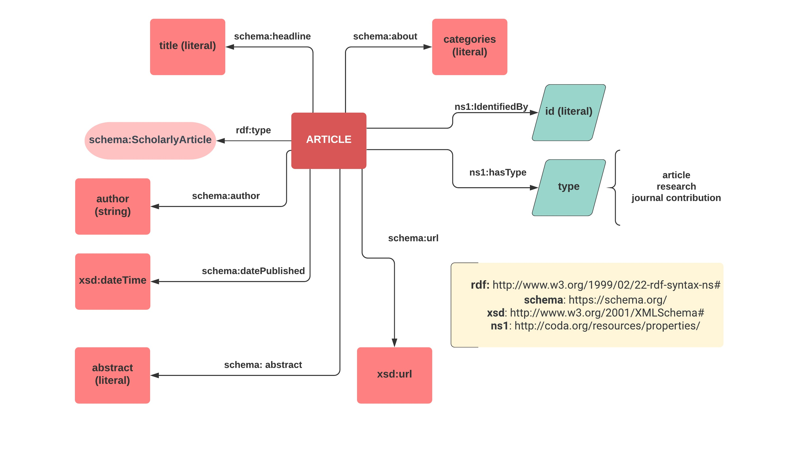

TOG-team: Grosu Teodora, Hriscu Oana, Schițcu Gabriel
Content
1. Introduction
About CODA - Goals and requirements
CODA stands for COVID-19 Data for All. It is a smart micro-service-based web system that is able to provide information regarding the Covid-19 pandemic in multiple written and visual formats for both specialists and the general public. Every data collected by CODA such as articles, documents and graphics, contains attested pieces of information which can be easily viewed, downloaded and shared to other platforms. Moreover, everything on CODA can be accessed via a SPARQL endpoint created in order to ease user access to required knowledge. CODA’s goal is to keep everyone informed about the pandemic in a fast and easy manner and avoid spreading misinformation to the general public.
Initial UI Mockups and design
The desired website will have 3 pages with data extracted from external resources, and an About page containing information about the project.
Statistics Page - various charts for visualising the data
News Page
Articles Page
About Page
2. Implementation - Technology Stack
FRONT-END
Bootstrap - a free and open-source CSS framework directed at responsive, mobile-first front-end web development
SPARQLWrapper - python wrapper around a SPARQL service to remotely execute queries
SPARQL - a query language for interacting with RDF data
GraphDB - a Semantic Graph Database, compliant with W3C Standards
3. Microservices
Website
The website was developed using the Flask framework on the server side and the Bootstrap framework and ChartJS library for frontend design.
It consists of four pages: News, Articles, Statistics and About. News and Articles showcase data collected from around the internet that is retrieved via a call to the REST API mentioned below.
The users can share the articles to popular social media platforms or send them via email. The categories on the right-hand side of the page as well as the search bar, can be used to filter the articles.
The About page is for informational purposes and contains a short description of the project and its goals.
Statistics contains five dynamically generated charts based on processed data recieved from an API call.
The data for the chart can be filtered regionally (general data or country specific data). Both general and country data are collected with API calls but country data is saved locally in order to be further proccessed.
The five charts present the following statistics:
Top countries by active cases (general only)
COVID-19 evolution of active cases (time span filter available)
COVID-19 statistics for confirmed, decesed and recovered cases (date filter available)
COVID-19 average number of cases per month
COVID-19 evolution of recoveries and deaths
The overall country data can be downloaded in .CSV or .JSON format using the two download buttons located above the pie chart.
Top countries by active cases
An example of the statistics graphs
Data Crawlers
A data crawler or a web crawler is an Internet bot that systematically browses the World Wide Web, typically for creating search engine indices. CODA makes use of its own personalised data crawlers that collect Covid-19-related data from trusted news sources all over the internet.
The sources of information that are scraped by the data crawler come from official news articles sites, statistics sites and many more. A few examples are The Guardian, The New York Times and BBC News.
Basic inner workings
All our data crawler services work in a variation of a master-slave architecture. The common flow between all these services is the usage of a "ThreadManager", an entity which manages the speed, rythm and general flow of the resources between services.
Thus, the crawling service, the parent, acquires raw resources (pages, links, json data...) and feeds it to his thread manager which, assuming everything works well, will then make sure that every resource is processed in a timely manner, without putting at risk the integrity of the crawler or the well being of the API.
This mechanism is implemented in a generic way, such that it may be reused to other tasks that need this kind of resource processing management. Thus, in order benefit from a thread manager, we need to define some settings, the number of workers that we want and some other pause time length related settings, and we also need to define the actual method used to process a resource. Each crawler and usecase has different resources, that need to be processed differently in order to hopefully gather useful information that we will then displayed on the API, thus each crawler implements such a method that will be passed to the thread manager in order to be used.
Metrics Consumer
The metrics consumer is the service used to gather information and metrics about COVID related cases for each country and for each day from the beginning of the pandemic. The cases that we are interested in and that we gathered are as follows:
Confirmed - amount of people confirmed with Covid19 in that day and country
Deceases - number of deceased due to Covid19 in that day and country
Recovered - number of people that recovered from Covid19 in that day and country
Active - number of active cases at that time and in that country
Total Confirmed - total confirmed cases until that day and for that country
Total Deceased - total deceased due to covid until that day and for that country
Total Recovered - total recovered cases until that day and for that country
There are a number of API's able to provide us with this information, we reviewed multiple such sources and we finally choose Postman Covid Api as the main source of metrics. This API is reliable, fast, gives relevant live information that is always up to date, and it also is able to provide information about the earlier months of the pandemic, information that we needed in order to build useful graphs.
The API provides an endpoint that, when given a country code, will return a list of items representing each day from the start of the pandemic to the current day, each item having relevant information about covid cases for that day. This is the structure of one such item:
Postman Covid19 API data example
The Confirmed, Deceased and Recovered metrics present in the data are actually what we call "Total" metrics, in order to get a hold of the daily metrics (cases that happened in a single day, and not in all time until that day), we need to do some more processing. This involved gathering data from previous days and subtracting those amounts in order to reveal the daily values that we are interested into, this also calls for more validation in getting filtered data on the server.
Thus, the main flow is as follows: The main service gets a hold of all the country codes for the countries that we are interested in, each country code is a resource and it's added to the Thread Manager. The workers each take a country code, call the postman api and process the response in order to gather relevant information for that country. The response is then built and sent to our API which stores it into the graph. The worker then gets another country code and processes it until there are no more resources left.
Some optimizations. The Postman Covid19 API allows for "from" and "to" parameters, filtering the data that it sends back according to them. We can use this, for faster processing and avoidance of duplicates, yet we need to get a hold of the latest day that we have covid related metrics for each country, thus knowing how to use the filters. We implemented this using an extra call at the start of the consumer, this call is aimed at our API, and it returns a dictionary containing every country that we have in our system, alongside the latest day. This is used and updated subsequently.
We observed that Postman Covid19 API refreshes the data with new and updated values each day, commonly around 00:00 PM, yet we didn't know for sure, thus our consumer will try and fetch new data once every 6 hours, in order to be sure that we have the latest values at all times.
News Consumer
The news consumer is the service used to gather and populate the graph with the latest relevant news about Covid19. In order to do this we use News API, a popular API service that provides endpoints for gathering filtered news items on command. This is the structure to such an item:
News API data item example
This already provides us with most data that we need regarding news items: url, title, publication, description and even an optional imageUrl, yet we would also like to use a list of keywords, these would be displayed alongside the news item, to give a more focused view for the user.
In order to get a hold of some keywords, as well as other usefull information that we didn't get from News API, we used news-fetch, a python library that provides multiple functionalities when it comes to parsing and scrapping news articles and web pages in general. Using the url provided by News API, we scrapped the page that it was pointing at and, using one of the news-fetch functionalities, we got a hold of the keywords that would best describe that page.
The main flow would be as follows: Every 15 minutes the main service would make a News Api call, asking for the news related to Covid that happened in the past 15 minutes. Every one of this items represents a resource that needs to be processed, thus the workers will each take one item, use news-fetch to process the keywords, and then send it to our API that would store the news item into the graph.
Articles Consumer
The articles consumer is the service that handles the gathering and storing of Covid-research related articles. Like the news consumer, this service uses the News API and also news-fetch in order to use focused filters and and gather additional information.
Aside from the news-related mechanism, to gather relevant articles we also used a domain filtering implementation. We found that some publication domains use to focus on more research related items, while others opt for more traditional news. Thus, after some research, we came up with a list of trustworthy domains. These are present in a json file and can be changed at any time.
Thus, having access to those domains we can use one of News Api filters to only get articles released by those domains, which, after processing with another news-fetch functionality, would reveal information about the article type and about the categories that the article represents. This type of article are a lot more rare than normal articles, thus we configured our consumer to make a call for such items only once in a few hours.
REST API
CodAPI, the REST API developed for CODA is used by the other application services, but some
endpoints are also available for users. This API offers the options to get various data on COVID19 numbers, news or articles present on the website
as well as download it in CSV and JSON format.
If the user wishes to see data on countries they can get the list of countries with available data, latest cases counts for a country,
total cases in a day and in a date range.
For news related to the pandemic, the user can request the latest news, filter news in a specific date range or by keywords.
If article data is desired, the user can use a request to get the latest articles, filter them by type (dataset, journal, report etc.) or search for news
containing a specific term in the title.
TODO: add "pragmatic examples"
Communication between the REST API and THE OTHER SERVICES
The API is used by both the website microservice and the data crawlers. The crawlers used for retrieving data from the internet
make an authenticated request to specific endpoints in order to add data in the graph database. These endpoints are not available for 'regular' users.
The metrics crawler, for example, will first make a request to the API to get the date of the latest available cases in the graph for a specific country and
then, use that date to filter out the information retrieved from external resources. By doing this, we ensure that the crawlers will only add new data in the graphs
and no duplicates exist.
The website on the other hand, makes requests to the API in order to retrieve the data necessary for populating the charts and getting the latest news and articles.
The download functionality is also possible thanks to the API. The 'download' button available in the UI will generate a call to the appropriate
endpoint of the CodAPI, which in turn will return the file in the specified format.
Communication between the USERS and the REST API
Users can also retrieve data by making unauthenticated requests to the CodAPI. Possible use case scenarios include:
Getting all available countries - /api/countries
Getting all cases recorded in a specific country - /api/country/RO
Getting the cases recorded in a specific day for a given country - /api/country/RO?date=2020-01-23
Getting the cases recorded in a date range for a given country - /api/country/RO?from=2020-01-23&to=2020-01-26
Getting the average number of cases that occurred on a daily basis in each month of 2020 for a given country - /api/country/monthly/RO
Downloading the cases info for a specified country - /api/country/RO/download?format=csv
Searching for the latest news related to COVID-19* - /api/news/latest
Filtering the news by their publication source* - /api/news/filter/bbcNews
Searching for the latest research articles related to COVID-19* - /api/articles/latest
Filtering the articles by their type* - /api/articles/filter/journal%20contribution
Searching for articles containing a specific term in the title* - /api/articles/page/1?search_term=covid
* all these endpoints will return the latest 20 results by default, but a limit and/or offset can be explicitly specified
The graph handler is an intermediate layer between the API and the graphs. It runs queries against
a SPARQL endpoint in order to get/insert data in the graphs. The SPARQLWrapper library is used as
a Python interface for the endpoint, creating the query invocation and converting the results into
JSON format.
For SPARQL query examples, see section Accessing RDF Graph data using SPARQL
GraphDB
Ontotext GraphDB is a highly efficient and robust graph database with RDF and SPARQL support.
The three graphs that the application uses are stored in a repository on a remote GraphDB instance,
hosted in Google Cloud. The GraphDB Workbench (which is a web-based administration tool) is used for
managing the CODA repository and monitoring queries.
Service Architecture
4. User Journey
Users have acces to the News, Articles, Statistics and About pages and can use the following features:
News:
Share news on social media
Search for news using the search bar
Search for publications using the publications search bar
Get news based on keywords
Articles:
Share news on social media
Filter articles based on categories
Search for articles using the search bar
Articles page
Statistics:
Get country specific statistics
Download country data in .CSV or .JSON format
About:
Read information about the CODA service
For detailed instructions on how to use CODA, as well as the services it offers, please check out the CODA User Documentation,
available on github.
5. CODA Ontologies and Vocabularies
The CODA Ontologies describe how the items relate to one another semantically. The data extracted by the crawlers has been
stored in three different graphs, located in the same repository on the remote GraphDB instance. Each graph has its own smaller ontology,
modelling the semantic representation of the objects used.
Used vocabularies
For creating the ontologies, the following vocabularies have been used:
As shown in the picture below, the Countries are represented using the schema.org Country type,
to which an additional custom property has been added, i.e IdentifiedBy, using a country code. The country code is used for
uniquely identifying the resource URI. Furthermore, each country in the graph has a hasCases predicate, the objects being unique Cases blank nodes.
Additionally, each Cases node is modelled as an owl:Class, and a subclass of owl:Thing,
with its own custom properties, as defined by the CODA ontology:
ns1:isOfType defines the type of case for the value available in the node - confirmed, deceased, recovered, active, total_confirmed, total_deceased, total_recovered
ns1:isRaportedOn specifies the day when the cases occurred - it is used by both the API, and the crawlers for filtering the data and avoiding adding duplicate information in the graph
rdf:value contains the actual integer representing the number of cases of the specified type

Countries ontology
News ontology and graph
The news ontology uses the schema.org NewsArticle type for representing the news nodes,
for which the following properties have been defined:
schema.org headline defines the title
schema.org keywords represent items used for tagging the content
schema.org datePublished reveals the publication date
schema.org url represents the URL to the source publication (the website where the news was extracted from)
ns1:IdentifiedBy short uuid used to uniquely identify the news URI
ns1:PublishedIn the name of the publication the piece of news originates from
Since the news entities can be uniquely identified by their URI, other triples could be added to the ontology, from the available sources,
(for example schema.org), which define additional properties, such as articleBody, articleSection, editor and so on.

News ontology
Articles graph
The articles ontology evolves around the schema.org ScholarlyArticle type which defines
more research-oriented publications, as opposed to news. For this ontology, categories have been chosen as more appropriate, instead of keywords, since they relate to scientific
fields of research. As mentioned in the section above, other properties could be added to extend the ontology; however, for this case scenario, the following have been selected:
schema.org headline defines the title
schema.org author or creator of the article, which is more relevant than in the news ontology, where the creator is usually the same as the publication
schema.org datePublished reveals the publication date
schema.org abstract, representing a short description of the article
schema.org about defines the categories of the Scholarly Article
schema.org url represents the URL to the source publication (the website where the article was extracted from)
ns1:IdentifiedBy short uuid used to uniquely identify the article URI
ns1:hasType a custom property, defining the research work type - such as article or journal contribution

Articles ontology
A detailed overview of the vocabularies used is also available on github here
6. Accessing RDF Graph data using SPARQL
TODO
Adding new case nodes in the countries graph
Getting the average number of cases per day, for each month in 2020 (for a specific country)